무엇을 만들고, 어떤 모델을 쓰나요
영상 첫 15초가 이 강의로 만든 결과물이에요. 경복궁 마당에서 한복을 입은 외국인 관광객이 셀카로 웃고, 바닥에 세워 둔 폰 앞으로 뛰어가 포즈를 잡고, 다시 셀카로 걸으며 영어로 한마디 해요. 카메라도 모델도 배경도 없이 프롬프트 세 개로 만들었고, 발소리와 셔터 소리, 목소리까지 AI가 한 번에 넣었어요.
아래 화면 왼쪽 큰 사진이 처음 만든 캐릭터 이미지, 오른쪽 위가 캐릭터 시트, 오른쪽 아래가 완성 영상의 한 장면이에요. 이 세 장이 곧 강의의 세 단계예요.
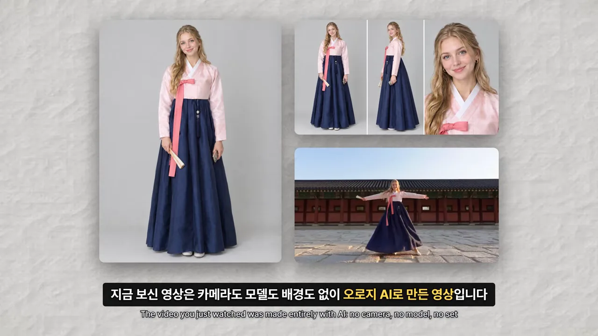
단계마다 쓰는 모델과 비율, 비용을 한 줄로 이으면 이래요. 비용은 발표자가 생성 버튼에서 확인한 크레딧이에요.
이미지 모델과 영상 모델
AI 모델은 크게 두 종류로 나뉘어요. 그림을 만드는 이미지 모델과, 그 그림을 움직이게 하는 영상 모델이에요. Higgsfield에는 둘 다 여러 개가 있고, 발표자는 그중 대표적인 것을 네 개, 세 개씩 골라 소개해요. 아래 슬라이드는 이미지 모델 네 개를 번호 순서로 늘어놓은 화면이에요.
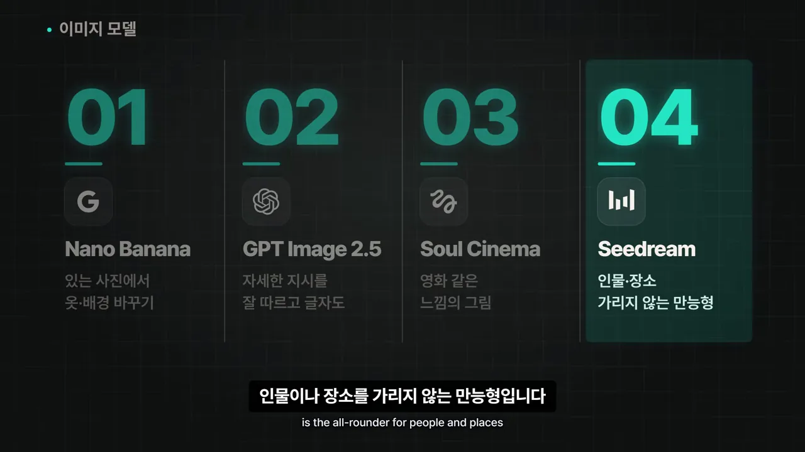
영상 모델 슬라이드는 Wan, Kling, Seedance 세 개예요. 강조된 Seedance 칸 아래에 '최대 30초'가 따로 붙어 있어요.
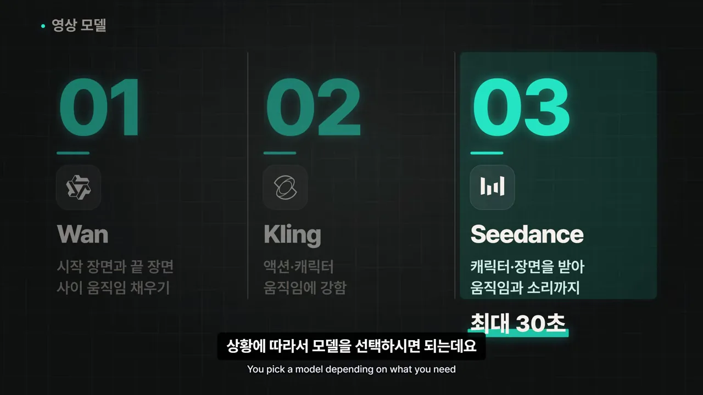
두 슬라이드를 표로 모으면 이래요.
| 종류 | 모델 | 잘하는 것 |
|---|---|---|
| 이미지 | Nano Banana | 이미 있는 사진의 옷이나 배경 바꾸기 |
| GPT Image 2.5 | 자세한 지시를 잘 따르고 글자도 잘 표현 | |
| Soul Cinema | 영화 같은 느낌의 그림 | |
| Seedream | 인물·장소 가리지 않는 만능형 | |
| 영상 | Wan | 시작 장면과 끝 장면 사이 움직임 채우기 |
| Kling | 액션, 캐릭터 움직임 | |
| Seedance 2.5 | 캐릭터와 장면을 받아 움직임과 소리를 같이, 최대 30초 |
이번 강의는 굵게 표시한 두 모델을 써요. GPT Image 2.5는 프롬프트를 정확하게 따르고, Seedance 2.5는 가장 사실적인 결과를 내기 때문이래요. 근거로 든 게 발표자의 지난 영상이에요. 여덟 개 모델에게 라면 먹는 장면을 시켜 비교했는데, 아래 화면처럼 Seedance 2.5 칸에 테두리가 쳐져 있어요.
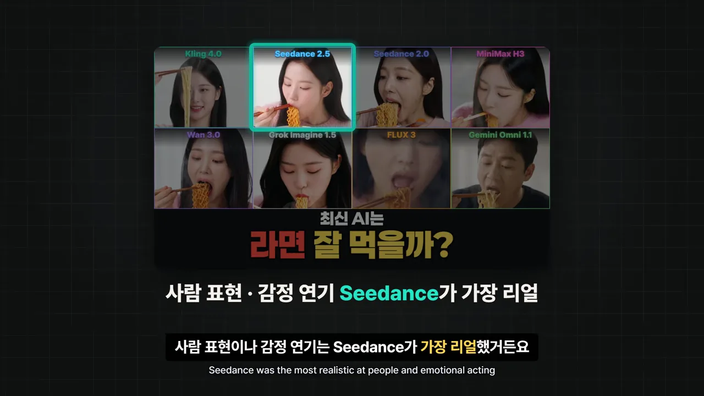
Higgsfield 가입과 요금제
발표자가 Higgsfield를 고른 이유는 두 가지예요. 앞에서 본 모델을 한 요금제로 다 쓸 수 있고, 초보자용부터 전문가용까지 도구가 같이 있어서예요. 사이트에서 Sign up을 누르면 구글·애플·마이크로소프트 계정으로 바로 가입할 수 있어요.
가입하면 요금제 페이지가 바로 나와요. 이 강의를 그대로 따라 하려면 Plus 이상이 필요해요. 화면 왼쪽 Starter 카드의 '무제한 모델' 목록에 Seedance 2.5가 빠져 있기 때문이에요.
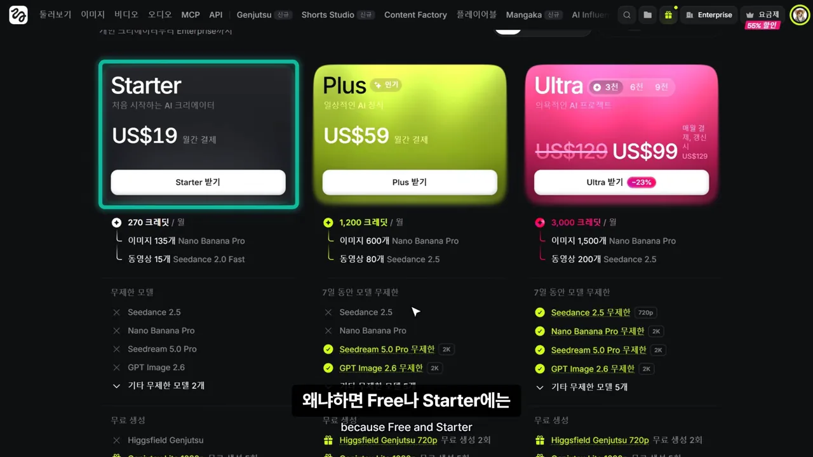
Plus 카드 아래쪽을 확대하면 첫 7일 동안 무제한인 모델 네 개와, 무료 생성 목록 맨 위의 'Higgsfield Genjutsu 720p 무료 생성 3회'가 보여요. 마지막 단계에서 쓰는 기능이에요.
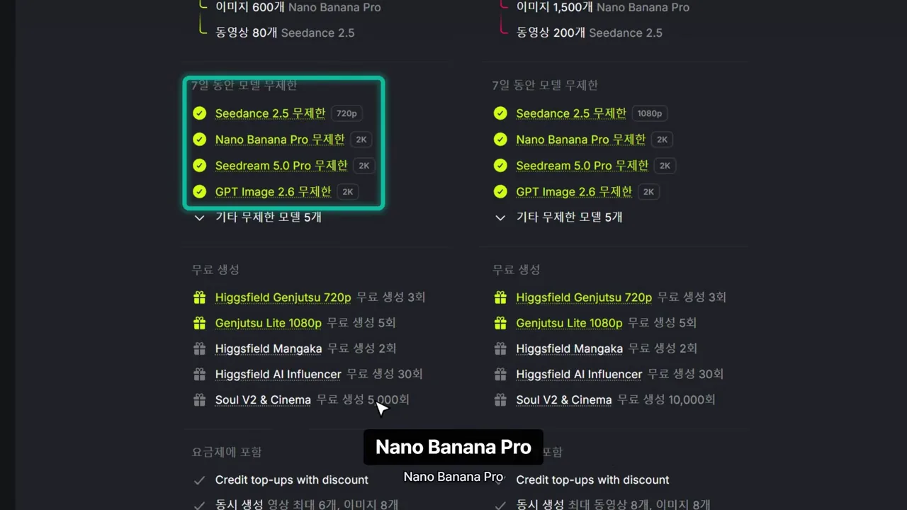
영상에서 말한 요금제 내용을 정리하면 이래요.
| 요금제 | 월 요금 | 월 크레딧 | 이 강의 기준으로 보면 |
|---|---|---|---|
| Free · Starter | 무료 · 19달러 | — · 270 | Seedance 2.5가 없어 따라 할 수 없어요 |
| Plus | 59달러 | 1,200 | 모든 모델 포함. 첫 7일 일부 모델 무제한, Genjutsu 무료 생성 3회. 언제든 해지 가능 |
| Ultra | 129달러 | 3,000 | Seedance 2.5 영상 약 200개 분량. 작업량이 많을 때 |
처음이라면 Plus로 충분하다는 게 발표자 의견이에요. 요금과 크레딧은 녹화 당시 화면 기준이라 가입 전에 요금제 페이지를 다시 확인하는 게 좋아요.
캐릭터와 캐릭터 시트 만들기
상단의 이미지 탭에서 '이미지 만들기'를 누르고 모델을 GPT Image 2.5 Flare로 골라요. 캐릭터로 쓸 사진이 이미 있다면 + 버튼으로 올리고 다음 단계로 바로 넘어가면 돼요. 발표자는 준비된 게 없어서 '경복궁에서 한복 입고 셀카 찍는 외국인 관광객'을 새로 만들어요.
캐릭터 프롬프트는 빠짐없이
프롬프트는 영어로 한 문단이에요. 아래 화면에서 주황색으로 칠한 부분이 발표자가 짚어 준 항목이에요. 20대 초반 서양 여성, 긴 금발 웨이브, 금색 링 귀걸이, 분홍 저고리와 남색 치마, 산호색 고름과 노리개, 한 손엔 접부채, 다른 손엔 스마트폰, 밝은 회색 스튜디오 배경, 정면을 보고 선 실사 전신 사진이에요. 유명인을 닮지 않은 가상 인물이라는 문장도 들어 있어요.
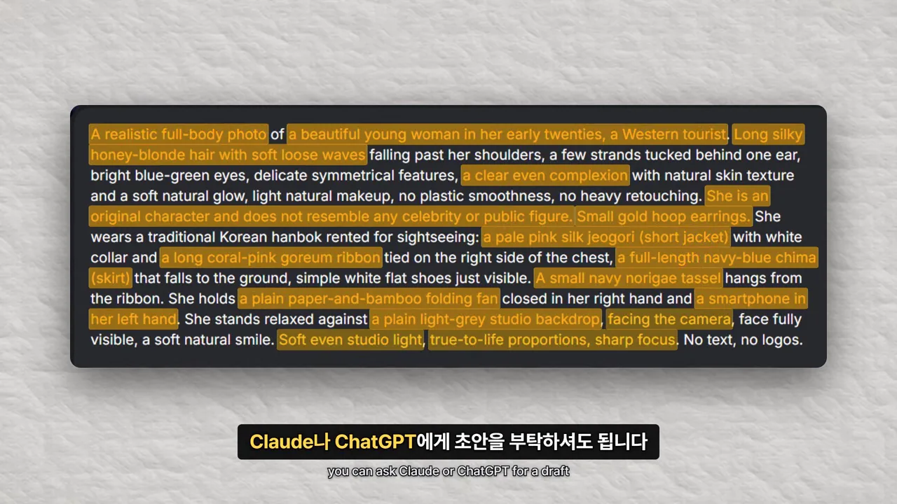
프롬프트 쓰기가 어렵다면 Claude나 ChatGPT에게 초안을 부탁해도 된다고 해요. 화면비는 3:4로 맞추고, 생성 버튼에 비용이 미리 표시되니 확인한 뒤 눌러요. 발표자 말로는 한 장에 3크레딧이에요.
결과 이미지에는 발표자가 프롬프트대로 나왔는지 확인한 곳에 선을 그어 두었어요. 왼쪽 '산호색 고름', 오른쪽 '금색 링 귀걸이'예요.
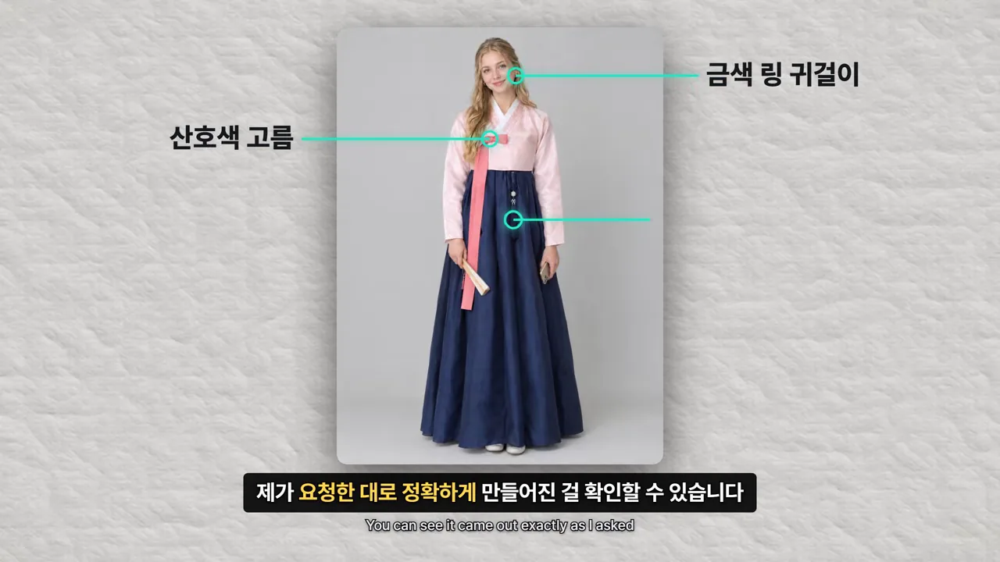
캐릭터 시트로 얼굴 고정하기
다음은 캐릭터 시트예요. 게임 캐릭터 설정화처럼 같은 인물을 여러 각도에서 한 장에 담아 두는 거예요. 이게 있어야 영상의 모든 장면에서 얼굴이 똑같이 유지되고 결과물도 훨씬 전문적으로 보인다고 해서, 발표자는 이 단계를 꼭 거치라고 해요.
방금 만든 이미지를 + 버튼으로 첨부하고, 아래 화면 하단의 모델 선택 칸에서 Flare를 GPT Image 2.5 Sunburst로 바꿔요. Sunburst는 정교한 수정에 맞춘 버전이라 첨부한 사람을 그대로 유지해 준다고 해요.
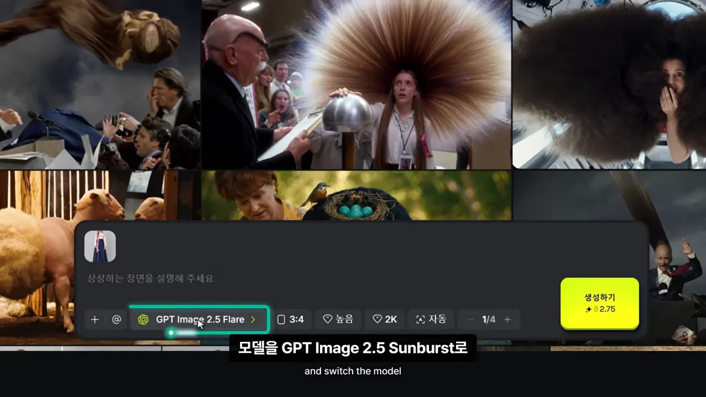
비율은 16:9로 바꾸고 프롬프트를 적어요. 첨부 사진만 기준으로 같은 여성의 세 칸 시트를 만들되, 1칸은 전신 앞모습, 2칸은 전신 옆모습, 3칸은 얼굴 클로즈업이에요. 얼굴·눈·머리·귀걸이·한복 색·고름·부채·스마트폰이 세 칸 모두 똑같아야 한다는 문장이 아래 화면에서 강조된 부분이에요.
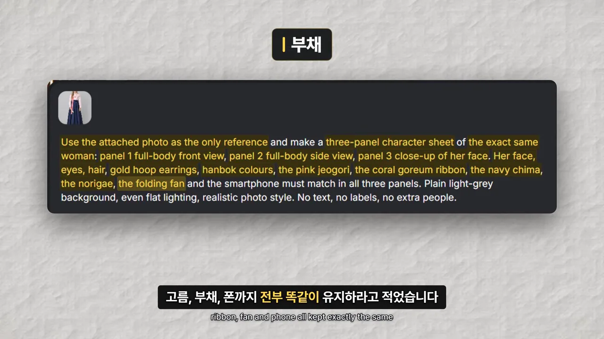
이것도 3크레딧이에요. 생성된 시트는 왼쪽부터 전신 앞모습, 전신 옆모습, 얼굴 클로즈업이에요. 앞 단계 이미지와 얼굴, 귀걸이, 고름 색이 그대로예요.
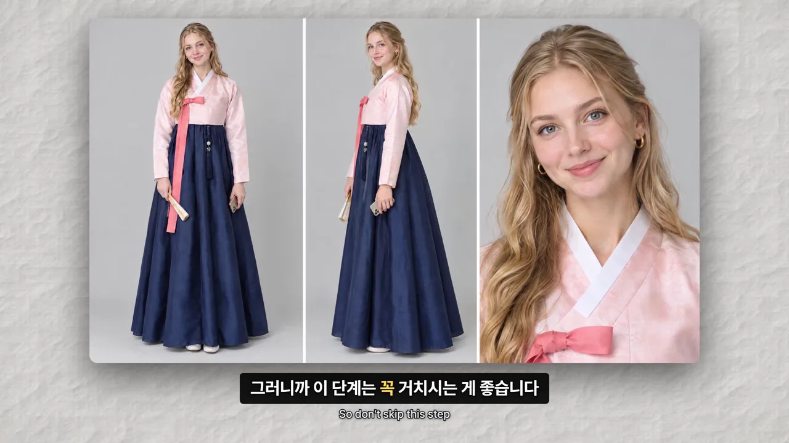
캐릭터를 움직이는 영상 만들기
이제 시트 속 캐릭터를 움직여요. 비디오 탭에서 '비디오 만들기'를 누르고, 아래 화면처럼 모델 칸이 Seedance 2.5로 되어 있는지 먼저 확인해요. 기본값은 길이 5초, 비율 16:9, 화질 1080p이고 버튼에 80크레딧이 찍혀 있어요.
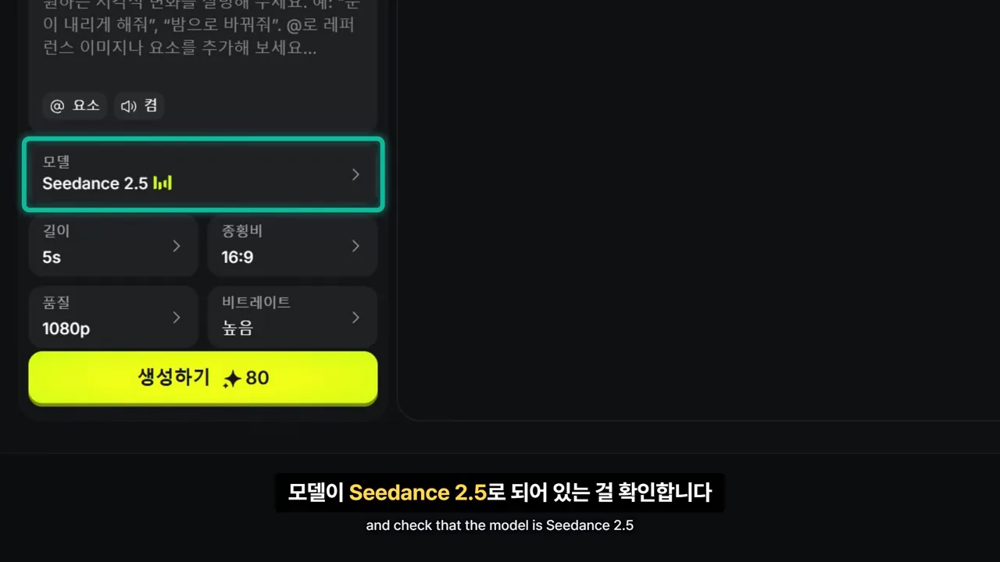
'레퍼런스 추가'로 캐릭터 시트를 올리고 프롬프트를 붙여 넣어요. 그다음 프롬프트 맨 앞에 @를 치면 첨부 이미지 목록이 떠요. 목록 맨 위 '이미지 1'이 방금 올린 시트예요. 이걸 골라야 프롬프트 속 주인공과 시트가 연결돼요.
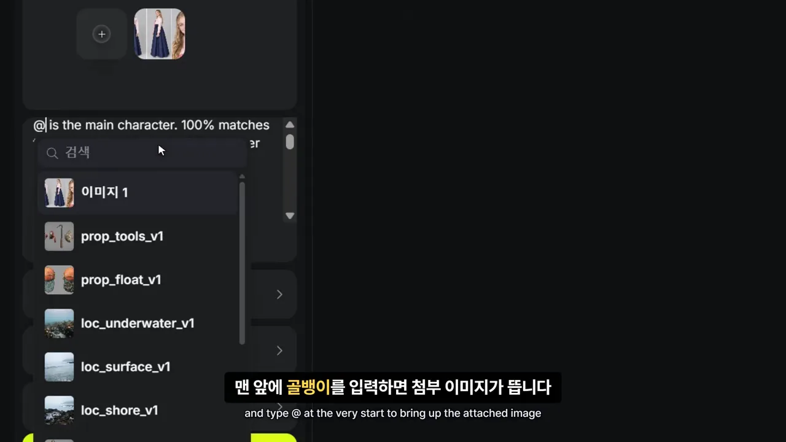
프롬프트에 적을 네 가지
영상 프롬프트에는 네 가지만 적으면 된대요. 누가 나오는지, 무슨 일이 일어나는지, 카메라가 어떻게 움직이는지, 어떤 소리가 들리는지예요. 아래 화면은 그중 '무슨 일이 일어나는지'에 해당하는 SCENE CONTEXT 부분이에요. 서울 궁궐 마당의 밝은 오후, 혼자 폰으로 여행 릴스를 찍는 장면이라고 적혀 있어요.
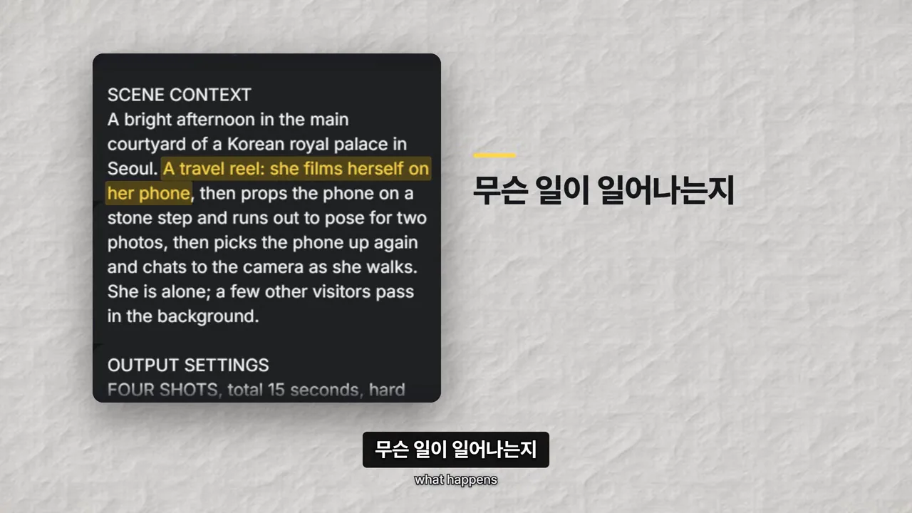
발표자는 인스타 릴스처럼 15초를 네 컷으로 나눴어요. 한 장면을 길게 뽑아도 되지만 컷을 나눠 적어도 괜찮대요. 프롬프트의 컷 구성을 시간 막대로 옮기면 이래요.
각 컷은 프롬프트에 SHOT 1, SHOT 2처럼 시작·끝 초를 달아 적어요. 아래는 첫 컷이에요. 카메라는 쭉 뻗은 오른손에 든 폰이고, 렌즈를 보고 웃으며 눈썹을 올린 뒤 폰을 화면 밖으로 내린다고 적혀 있어요.
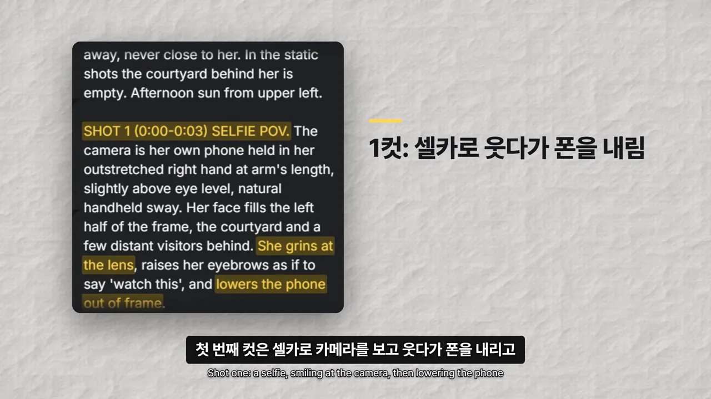
마지막 컷에는 영어 대사 한 줄을 그대로 적고, 입 모양은 자연스러운 립싱크로 맞추라고 했어요. 뒤로 관광객 몇 명이 지나가게 했고, 소리는 발소리, 비단 스치는 소리, 셔터 두 번, 목소리와 웃음소리로 적었어요. 하나 더 넣은 게 금지 문장이에요. 아래 화면 강조 부분처럼 읽을 수 있는 글자, 간판, 현판, 로고, 깃발이 나오지 않게 했어요. 글자는 엉터리로 나오는 경우가 많아서래요.
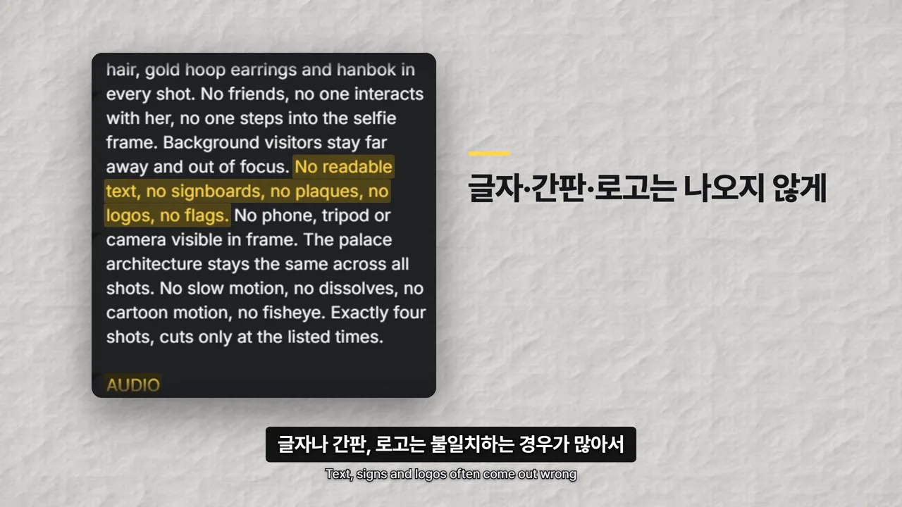
길이·화질과 비용
길이는 최대 30초까지 되지만 발표자는 15초로, 비율 16:9, 화질 720p로 맞췄어요. 아래 화면 버튼에 105크레딧이 찍혀 있어요. 같은 패널에서 바꿔 본 값을 모으면 길이와 화질이 비용을 크게 좌우해요.
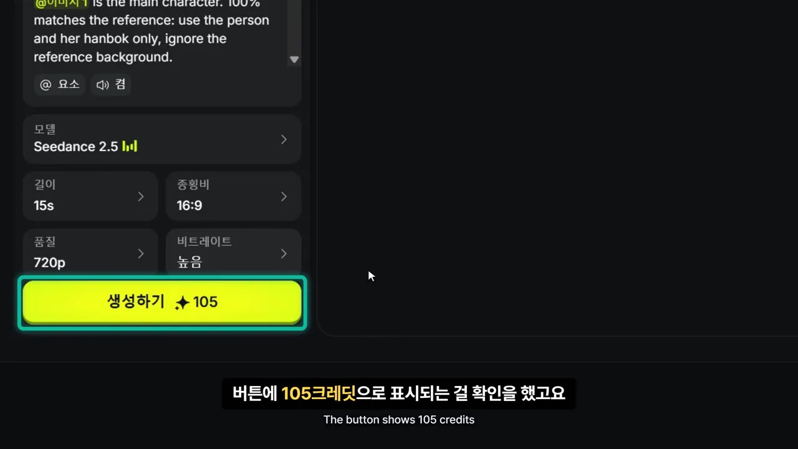
| 길이 | 화질 | 생성 버튼 크레딧 |
|---|---|---|
| 5초 (기본값) | 1080p | 80 |
| 15초 | 1080p | 240 |
| 15초 | 720p | 105 |
생성을 누르고 몇 분 기다리면 영상이 나와요. 아래는 두 번째 컷의 한 장면이에요. 바닥 높이에 세워 둔 폰 앞에서 양팔을 활짝 벌리고 서 있어요. 프롬프트대로 궁궐 담장과 돌바닥이 보이고 간판이나 글자는 없어요.
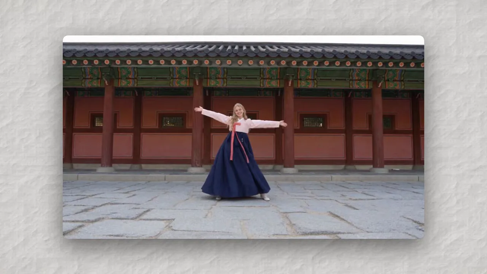
결과 확인과 한 줄 수정
결과는 세 가지로 확인해요.
- 얼굴이 캐릭터 시트와 같나요?
- 컷이 바뀌어도 얼굴이 그대로 유지되나요?
- 움직임이 자연스럽나요?
마음에 들면 내려받고, 부족하면 프롬프트를 고쳐 다시 뽑아요. 발표자도 실수를 하나 짚어요. 마지막 컷은 셀카인데 아래 화면처럼 뻗은 손에 폰이 또 들려 있어요. 폰으로 찍고 있으니 손에 폰이 보이면 안 되는 장면이에요.
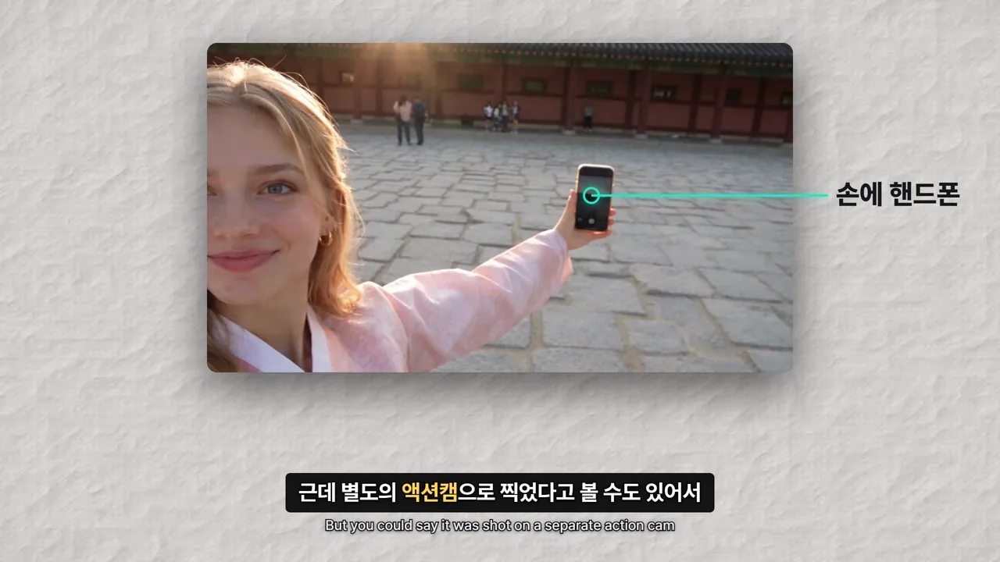
대신 시간대를 저녁으로 바꿔 봤어요. 첫 문장을 해 질 녘으로, 빛을 낮은 주황 햇빛으로만 고치고 나머지는 그대로 두었어요. 아래 왼쪽이 원래 오후 버전, 오른쪽이 새 저녁 버전이에요. 같은 사람, 같은 장소, 같은 부채 포즈인데 오른쪽은 햇빛이 뒤에서 비쳐 전체가 따뜻하게 물들었어요.
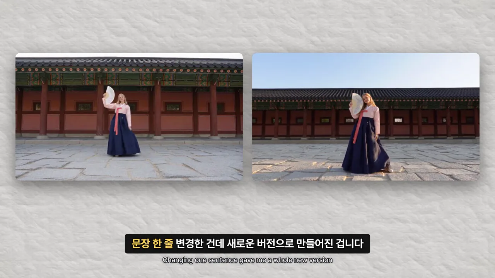
Genjutsu로 유행 영상에 캐릭터 넣기
마지막 팁은 Genjutsu예요. 요즘 유행하는 영상에 내 캐릭터를 넣어 주는 기능이라, 프롬프트를 처음부터 쓰는 것보다 결과를 빨리 얻을 수 있어요. Genjutsu 탭에 들어가면 아래 화면 오른쪽처럼 커뮤니티 인기 영상이 쭉 나와요. 발표자가 고른 건 왼쪽에서 두 번째, 흰 티셔츠 차림으로 춤추는 아이돌 챌린지 영상이에요.
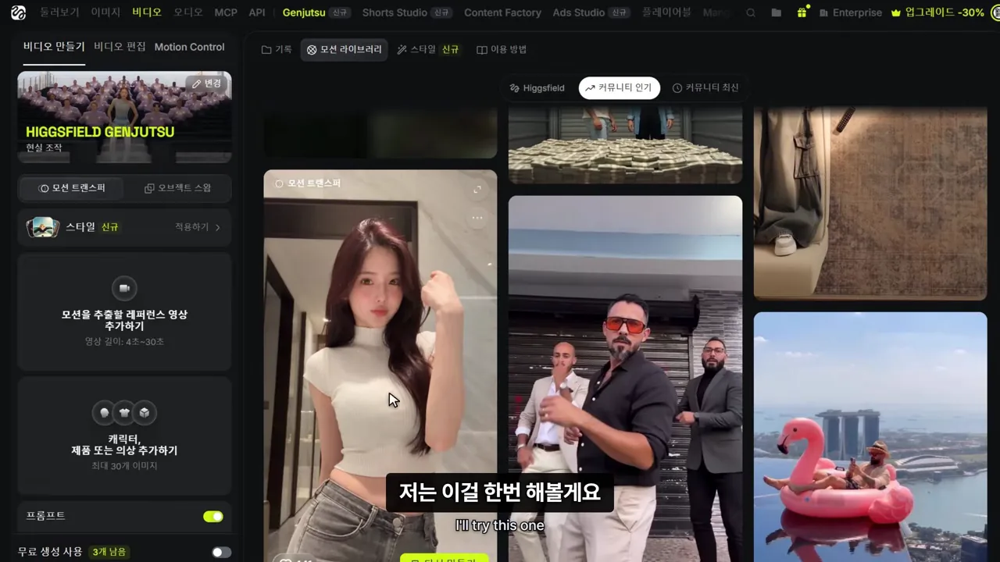
'다시 만들기'를 누르면 등장인물만 바꿀 수 있어요. 아까 만든 한복 캐릭터로 바꾸고, 화질을 720p로 맞추고, 비용을 확인한 뒤 생성해요. 아래 왼쪽이 원래 템플릿, 오른쪽이 결과예요. 엘리베이터 앞 배경과 팔 동작, 카메라 구도는 그대로고 사람만 한복 캐릭터로 바뀌었어요.
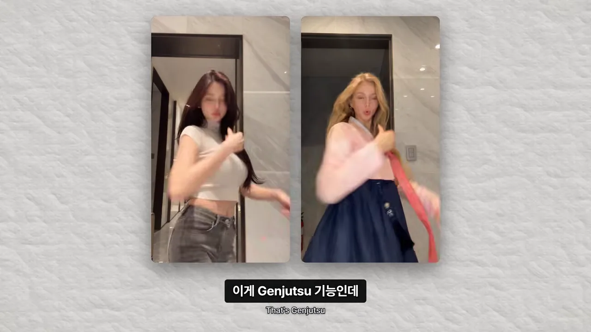
마무리: 시장 전망
끝으로 발표자는 AI 영상 생성 시장 전망을 보여 줘요. 아래 막대그래프는 현재에서 2033년까지 해마다 막대가 높아지고, 마지막 2033년 막대만 노란색이에요. 왼쪽 아래에 출처로 Grand View Research 전망이 적혀 있어요. 발표자는 4배 가까이, 1년에 20% 정도씩 커진다고 읽어요.
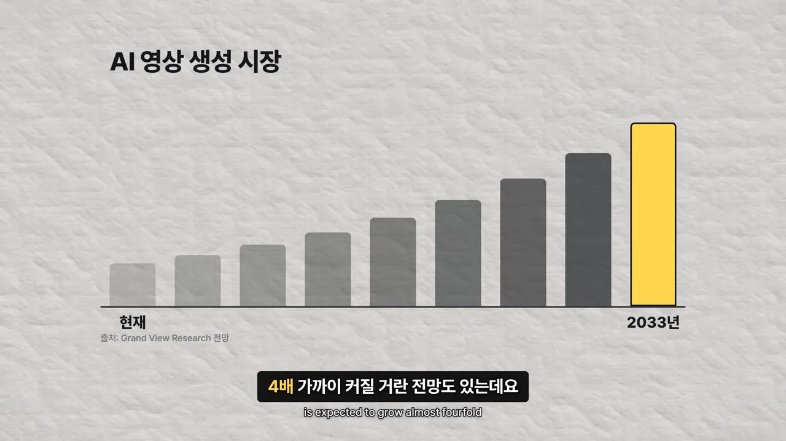